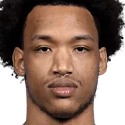

His best final NBA finish was #3 of 30, with the 2023-24 Minnesota Timberwolves. In his 96 games for 3 teams over 4 seasons they went 50–46 (52.1%), +4 games over .500, with an average final finish of 9.2. The biggest one-season rise in his career: the Minnesota Timberwolves went from #15 in 2022-23 to #3 in 2023-24.
Compare Wendell Moore with…
Final NBA finish, season by season
Title Finals Other playoffs Missed playoffs. #1 = champion; the dashed line is last place that season. Each point opens that season's final standings.
All 30 teams ranked in 2023-24, his best finish (#3)Teammate help
 Cade Cunningham8.02 seasons
Cade Cunningham8.02 seasons Anthony Edwards5.02 seasons
Anthony Edwards5.02 seasons Rudy Gobert4.01 season
Rudy Gobert4.01 season
Career
Regular seasons 1946-47 to 2026-27, games through Nov. 17, 2026. Records include 2026-27 to date; season counts and finishes use completed seasons. Each card opens its board. How we count.

Latest completed seasons
Season by season
Newest first; every header sorts. Final NBA finish is the team's rank among all teams that season (#1 = champion) and opens that season's standings. "Without him" uses the team-season window; the span line counts only the games between his first and last game for the team.
| 2025-26 | #5 of 30 | 60–22 73.2% | Lost conf semis 3–4 | 6 of 82 | 5–1 83.3% | 55–21 72.4%span: 44–19, gap +13.5 | +11.0 | |
| 2024-25 | #14 of 30 | 44–38 53.7% | Lost 1st round 2–4 | 20 of 82 | 7–13 35.0% | 22–13 62.9%span: 17–10, gap −28.0 | −27.9 | |
| 2024-25 | #28 of 30 | 19–63 23.2% | Missed playoffs | 16 of 82 | 4–12 25.0% | 3–18 14.3%span: 1–12, gap +17.3 | +10.7 | |
| 2023-24 | #3 of 30 | 56–26 68.3% | Lost conf finals 1–4 | 25 of 82 | 18–7 72.0% | 38–19 66.7%span: 28–16, gap +8.4 | +5.3 | |
| 2022-23 | #15 of 30 | 42–40 51.2% | Lost 1st round 1–4 | 29 of 82 | 16–13 55.2% | 26–27 49.1%span: 25–26, gap +6.2 | +6.1 |
On/off, starts and close games
From the lineup data, 1996-97 on. On/off is net points per 100 possessions with him on the floor minus off, a different unit from the win-rate gaps. Started and off the bench are team records in those games; close games are those within 5 points in the last 5 minutes with him on the floor.
Teammate help by season
Help = Teammates Score points for honors won that season by teammates who shared a game with him. How help works.
- 2025-26
 Detroit
Cade Cunningham All-NBA 1stAll-Star3 g
Detroit
Cade Cunningham All-NBA 1stAll-Star3 g Jalen Duren All-NBA 3rdAll-Star3 g
Jalen Duren All-NBA 3rdAll-Star3 g Ausar Thompson All-Def 1st3 g
Ausar Thompson All-Def 1st3 g
More: last season's honors and other teammates
Help coming in (teammates' honors the season before): 3.0
Other teammates (no honors that season): Ron Holland 6 g, Paul Reed 6 g, Javonte Green 6 g, Duncan Robinson 6 g, Caris LeVert 6 g, Daniss Jenkins 5 g, Chaz Lanier 5 g, Isaiah Stewart 5 g, Marcus Sasser 3 g, Tobias Harris 2 g, Tolu Smith 2 g, Bobi Klintman 2 g, Kevin Huerter 2 g, Isaac Jones 1 g
- 2024-25Detroit
Cade Cunningham All-NBA 3rdAll-Star17 g
More: last season's honors and other teammates
Help coming in (teammates' honors the season before): 0
Other teammates (no honors that season): Ron Holland 20 g, Marcus Sasser 20 g, Malik Beasley 20 g, Tobias Harris 19 g, Jalen Duren 19 g, Isaiah Stewart 19 g, Simone Fontecchio 17 g, Tim Hardaway Jr 16 g, Paul Reed 16 g, Jaden Ivey 12 g, Ausar Thompson 10 g, Daniss Jenkins 3 g, Bobi Klintman 3 g, Cole Swider 2 g and 1 more
- 2024-25
 CharlotteNo honored teammate
CharlotteNo honored teammate - 2023-24
 Minnesota
Anthony Edwards All-NBA 2ndAll-Star24 gRudy Gobert DPOYAll-Def 1st23 g
Minnesota
Anthony Edwards All-NBA 2ndAll-Star24 gRudy Gobert DPOYAll-Def 1st23 g Karl-Anthony Towns All-Star15 g
Karl-Anthony Towns All-Star15 g Naz Reid Sixth Man25 g
Naz Reid Sixth Man25 g Jaden McDaniels All-Def 2nd23 g
Jaden McDaniels All-Def 2nd23 g
More: last season's honors and other teammates
Help coming in (teammates' honors the season before): 1.0
Other teammates (no honors that season): Nickeil Alexander-Walker 25 g, Kyle Anderson 24 g, Mike Conley 23 g, Jordan McLaughlin 22 g, Josh Minott 18 g, Luka Garza 18 g, Leonard Miller 14 g, Shake Milton 12 g, Troy Brown 11 g, Monte Morris 9 g, TJ Warren 7 g, Daishen Nix 7 g
- 2022-23Minnesota
Anthony Edwards All-Star28 g
More: last season's honors and other teammates
Help coming in (teammates' honors the season before): 5.0 · from Karl-Anthony Towns (3.0), Rudy Gobert (2.0)
Other teammates (no honors that season): Jaden McDaniels 26 g, Naz Reid 25 g, Jaylen Nowell 24 g, Kyle Anderson 23 g, Rudy Gobert 23 g, Nathan Knight 22 g, D'Angelo Russell 20 g, Austin Rivers 19 g, Luka Garza 18 g, Josh Minott 15 g, Taurean Prince 14 g, Matt Ryan 13 g, Jordan McLaughlin 13 g, Bryn Forbes 13 g and 3 more
Record against each opponent
- Most playoff series against one franchise: 2 against the Denver Nuggets, 1–1 in series and 2–1 in games.
Regular season, completed seasons: 96 games, 50–46, against 29 franchises. Grouped by franchise (named as today); game lists keep each team's name that season.
| Games list | |||||||
|---|---|---|---|---|---|---|---|
| 7 | 2–5 | 28.6% | −3 | 1–1 (2–1 in games) | 2022-23 to 2024-25 | ||
| 5 | 4–1 | 80.0% | +3 | 0–1 (0–1 in games) | 2022-23 to 2024-25 | ||
| 5 | 4–1 | 80.0% | +3 | N/A | 2022-23 to 2025-26 | ||
| 5 | 3–2 | 60.0% | +1 | N/A | 2022-23 to 2024-25 | ||
| 5 | 2–3 | 40.0% | −1 | N/A | 2022-23 to 2024-25 | ||
| 5 | 2–3 | 40.0% | −1 | N/A | 2022-23 to 2025-26 | ||
| 5 | 2–3 | 40.0% | −1 | N/A | 2022-23 to 2024-25 | ||
| 5 | 3–2 | 60.0% | +1 | N/A | 2022-23 to 2024-25 | ||
| 5 | 3–2 | 60.0% | +1 | N/A | 2022-23 to 2025-26 | ||
| 4 | 0–4 | 0.0% | −4 | N/A | 2022-23 to 2024-25 | ||
| 4 | 2–2 | 50.0% | 0 | N/A | 2022-23 to 2024-25 | ||
| 4 | 2–2 | 50.0% | 0 | N/A | 2023-24 to 2025-26 | ||
| 3 | 1–2 | 33.3% | −1 | N/A | 2022-23 to 2024-25 | ||
| 3 | 3–0 | 100.0% | +3 | N/A | 2024-25 | ||
| 3 | 0–3 | 0.0% | −3 | N/A | 2022-23 to 2024-25 | ||
| 3 | 1–2 | 33.3% | −1 | N/A | 2022-23 to 2024-25 | ||
| 3 | 2–1 | 66.7% | +1 | N/A | 2024-25 to 2025-26 | ||
| 3 | 3–0 | 100.0% | +3 | N/A | 2022-23 to 2023-24 | ||
| 2 | 1–1 | 50.0% | 0 | N/A | 2024-25 | ||
| 2 | 2–0 | 100.0% | +2 | N/A | 2022-23 to 2025-26 | ||
| 2 | 0–2 | 0.0% | −2 | N/A | 2024-25 | ||
| 2 | 2–0 | 100.0% | +2 | N/A | 2023-24 | ||
| 2 | 1–1 | 50.0% | 0 | N/A | 2023-24 | ||
| 2 | 0–2 | 0.0% | −2 | 1–0 (3–0 in games) | 2023-24 | ||
| 2 | 1–1 | 50.0% | 0 | N/A | 2022-23 to 2024-25 | ||
| 2 | 2–0 | 100.0% | +2 | N/A | 2022-23 to 2024-25 | ||
| 1 | 1–0 | 100.0% | +1 | N/A | 2023-24 | ||
| 1 | 1–0 | 100.0% | +1 | N/A | 2024-25 | ||
| 1 | 0–1 | 0.0% | −1 | N/A | 2024-25 |
Rows add up to his career record in his games. A playoff series counts when he played in it; early round-robin games show as games only. How we count.
Playoffs, with and without him
Arrival and departure
Team wins per 82 games the season before he arrived vs his first season there, and his last season vs the season after he left. Per 82 so short seasons compare fairly. These are team records, not a measure of what he did.
| Left | 2025-26 | 2024-25: 19–63 19.0 per 82 | 2025-26: 44–38 44.0 per 82 | +25.0 wins | |
| Arrived | 2024-25 | 2023-24: 14–68 14.0 per 82 | 2024-25: 44–38 44.0 per 82 | +30.0 wins | |
| Arrived | 2024-25 | 2023-24: 21–61 21.0 per 82 | 2024-25: 19–63 19.0 per 82 | −2.0 wins | |
| Left | 2024-25 | 2023-24: 56–26 56.0 per 82 | 2024-25: 49–33 49.0 per 82 | −7.0 wins | |
| Arrived | 2022-23 | 2021-22: 46–36 46.0 per 82 | 2022-23: 42–40 42.0 per 82 | −4.0 wins |
Seasons split between teams
Each team's record before his first game for it, inside his window (games with and without him) and after his last game, in the seasons he played for two or more teams.
Best duos
Team record in regular-season games both played, top 10 by win %, at least 50 games together.
- Anthony Edwards
34–18 65.4%
- Naz Reid
30–20 60.0%